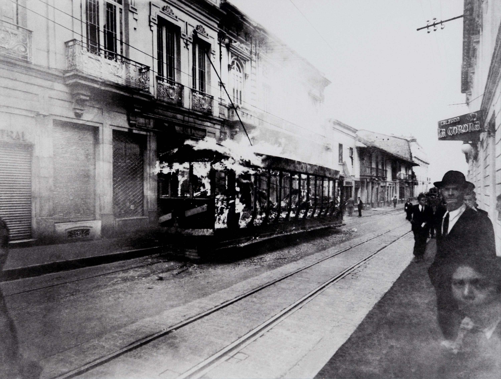

01 / 03
Quema de tranvías
- Autoría
- Sady González
- Fecha
- 1948
- Tipo
- Fotografía
- Lugar
- Plaza de Bolívar
- Temas
- Vida cotidiana
- Mirada
- La rebelde
- Impacto
- Me dejó algo
- Reacción
- Deja pensando
«Antes que me hubiera apasionado por mujer alguna, jugué mi corazón al azar y me lo ganó la Violencia».
— José Eustasio Rivera, La vorágine
¿Alguna vez te has detenido a pensar cuántas historias de violencia guardan las calles que recorres? Quizás algunas las conoces por los libros de historia, otras por las fotografías que has visto o por los relatos que alguien de tu familia te ha contado. Algunas ocurrieron hace décadas; otras siguen formando parte de la ciudad que habitamos.
Bogotá ha sido escenario de acontecimientos que dejaron huellas profundas en su historia. Sus calles han presenciado enfrentamientos, protestas, destrucciones y transformaciones que cambiaron para siempre la manera de vivir y comprender la ciudad. Pero la violencia no se encuentra únicamente en los grandes acontecimientos: también permanece en los lugares que desaparecieron, en las historias de quienes los habitaron y en las memorias que todavía intentan hacerse escuchar.
He escogido estas obras porque quiero acercarte a distintas formas de mirar esa Bogotá. A través de fotografías, relatos y expresiones artísticas, podremos recorrer algunos de sus episodios más dolorosos, reconocer los territorios que fueron marcados por la violencia y acercarnos a las experiencias que muchas veces quedan fuera de los relatos oficiales.
Mirar estas historias no significa acostumbrarnos al dolor ni quedarnos atrapados en el pasado. Significa detenernos a reconocer lo que ocurrió, escuchar otras voces y comprender que las heridas de una ciudad no desaparecen simplemente porque el tiempo pase. Algunas permanecen en sus espacios, otras en sus habitantes y muchas en la memoria colectiva.
Te invito a recorrer estas obras con una mirada atenta y sensible. A preguntarte qué historias conocemos, cuáles hemos olvidado y qué significa habitar una ciudad que todavía conserva las huellas de su propia historia.
¿Qué heridas de Bogotá siguen hablando, incluso cuando nadie las nombra?
Recorrer las obras ↓COLECCIÓN 04 / 07
Las heridas que también cuentan nuestra historia.

01 / 03
¿Una ciudad en llamas también puede quedar atrapada en una fotografía?
El 9 de abril de 1948, Bogotá vivió uno de los episodios más determinantes y violentos de su historia. Tras el asesinato de Jorge Eliécer Gaitán, las calles se llenaron de manifestaciones, disturbios e incendios que transformaron profundamente el centro de la ciudad. Entre las imágenes que conservaron la memoria de aquella jornada se encuentran las fotografías de Sady González, quien registró los tranvías en llamas y los estragos que dejó el Bogotazo.
A través de su cámara, González capturó una ciudad alterada por la indignación y el desconcierto. Los vehículos destruidos, las columnas de humo y las calles convertidas en escenarios de enfrentamiento revelan la magnitud de una jornada en la que el espacio urbano se transformó ante los ojos de sus habitantes. La fotografía no solo documenta la destrucción material, sino que conserva un instante en el que la vida cotidiana de Bogotá quedó interrumpida por la violencia.
Los tranvías, que durante décadas habían formado parte de los recorridos habituales de los bogotanos, aparecen aquí convertidos en símbolos de una ciudad que atraviesa una ruptura. Aquello que antes representaba el movimiento y la conexión entre sus habitantes se transforma en testimonio de una jornada que modificó el rumbo de la historia nacional y dejó profundas marcas en la memoria urbana.
Observar esta fotografía es acercarse a un momento en el que Bogotá parece detenerse entre el humo y las llamas. Una imagen que nos recuerda que las ciudades también guardan memoria de sus heridas y que, a veces, una fotografía puede conservar aquello que el tiempo no consigue borrar.
Bogotá guarda historias que no siempre conocemos. Algunas permanecen en sus calles, otras en los recuerdos de quienes la habitan y muchas esperan ser reconocidas para no desaparecer en el olvido.
Queremos invitarte a compartir tu mirada sobre las historias, los lugares y los acontecimientos relacionados con la violencia en Bogotá que consideras importantes para recordar.
Tu participación es voluntaria. No necesitas compartir experiencias personales ni relatar situaciones dolorosas. Puedes responder únicamente aquello con lo que te sientas cómodo.
Gracias por ayudarnos a construir otras formas de mirar y comprender nuestra ciudad.
Compartir mi mirada ↗Estas obras y documentos permiten acercarnos a otras formas de violencia que han atravesado la ciudad. Cada uno propone una manera distinta de mirar sus territorios, sus conflictos y las experiencias de quienes los habitan.
Esta historia se acerca a la vida de María Zabala y a la violencia de las pandillas en el barrio Egipto, en el centro-oriente de Bogotá, durante las décadas de 1980 y 1990. Una mirada a las experiencias de quienes crecieron en medio de esas dinámicas.
Conocer la historia ↗Este documental de 1995, realizado por Citurna TV, presenta distintas realidades de la ciudad relacionadas con la precariedad, la exclusión y las condiciones de vida de quienes habitan sus territorios más vulnerables. Una mirada a otras formas de violencia que atraviesan la experiencia urbana.
Ver documental ↗En este documental, Jorge Caballero observa el funcionamiento cotidiano de la justicia en Bogotá y los procesos relacionados con delitos menores. La película permite acercarse a las desigualdades y contradicciones que atraviesan la vida urbana.
Ver documental ↗Este informe del Centro Nacional de Memoria Histórica estudia la llamada limpieza social como una forma de violencia ejercida contra poblaciones estigmatizadas. Incluye un acercamiento a Ciudad Bolívar y permite reconocer una problemática que también ha marcado distintos territorios de Bogotá.
Consultar el informe ↗